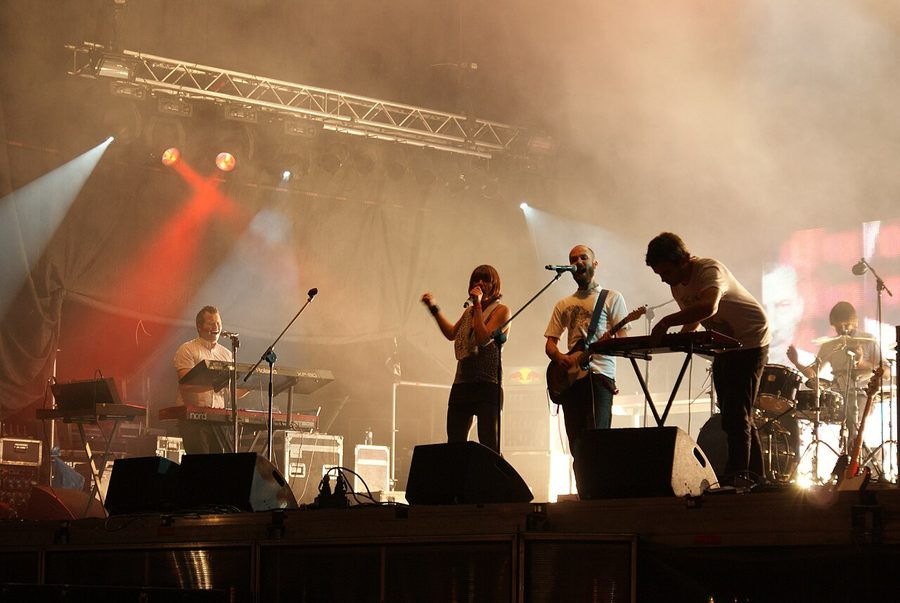

Crazy P take it across Australia


.jpg){kind=link}
To many they’ll be known forever as ‘Crazy Penis’, but either way the recently rebranded Crazy P are one of Australia’s favourite touring festival acts. They’ve been seen at all of our favourite festivals, from Field Day to Parklife to Good Vibrations, and they’ll be back shortly for one of Sydney’s favourite boutique festivals Playground Weekender. Now comes the news that the rest of the nation will be getting some Crazy P(enis) loving too!
With several well-received albums already under their belt, including their breakthrough effort Night on Earth which went gangbusters in Australia, and built them up such a solid following in this country; not to mention their consistent presence on our festival circuit! Last year they released their follow up Stop Space Return, which they’ll be playing live in Australia for the very first time.
Catch Crazy P on their Australian tour…
25th January – Overflow At The Bay, SA.
29th January – The Forum, Sydney
30th January – Tivoli, Brisbane.
31st January – Capitol, Perth.
6th February – Billboard, Melbourne.
7th February – Playground Weekender, Wisemans Ferry, NSW